특수용접기능사 (2005-01-30 기출문제)
1과목: 용접일반
1. 용접 작업시 안전 수칙에 관한 내용이다. 다음 중 틀린 것은?
- 용접 헬멧, 용접보호구, 용접 장갑은 반드시 착용해야 한다.
- 심신에 이상이 있을 때에는 쉬지 않고, 보다 더 집중해서 작업을 한다.
- 미리 소화기를 준비하여 작업 중에는 만일의 사고에 대비한다.
- 환기가 잘되게 한다.
(정답률: 97%)

2. 연소 범위가 가장 큰 가스는?
- 수소
- 메탄
- 프로판
- 아세틸렌
(정답률: 66%)
3. 용접 작업에서 비드(bead)를 만드는 순서로 다층 쌓기로 작업하는 용착법에 해당되지 않는 것은?
- 스킵법
- 빌드업법
- 전진블록법
- 캐스케이드법
(정답률: 76%)
4. 용접변형과 잔류응력을 경감시키는 방법을 틀리게 설명한 것은?
- 용접 전 변형 방지책으로는 역변형법을 쓴다.
- 용접시공에 의한 경감법으로는 대칭법, 후진법, 스킵법 등이 쓰인다.
- 모재의 열전도를 억제하여 변형을 방지하는 방법으로는 도열법을 쓴다.
- 용접 금속부의 변형과 응력을 제거하는 방법으로는 담금질을 한다.
(정답률: 57%)
5. 아크 용접기의 사용에 대한 설명으로 틀린 것은?
- 전격방지기가 부착된 용접기를 사용한다.
- 용접기 케이스는 접지(earth)를 확실히 해 둔다.
- 개로전압이 높은 용접기를 사용한다.
- 사용률을 초과하여 사용하지 않는다.
(정답률: 90%)
6. 속불꽃과 겉불꽃 사이에 백색의 제3불꽃 즉 아세틸렌 페더(excess acetlene feather)가 있는 불꽃은?
- 중성 불꽃
- 산화 불꽃
- 아세틸렌 불꽃
- 탄화 불꽃
(정답률: 53%)
7. 제품을 용접한 후 일부분에 언더컷이 발생하였을 때에 보수 방법으로 가장 적당한 것은?
- 결함의 일부분을 깎아내고 재용접한다.
- 홈을 만들어 용접한다.
- 결함부분을 절단하고 재용접한다.
- 가는 용접봉을 사용하여 보수한다.
(정답률: 73%)
8. 가스용접 시 철판의 두께가 3.2㎜ 일 때 용접봉의 지름은 얼마로 하는가?
- 1.2㎜
- 2.6㎜
- 3.5㎜
- 4㎜
(정답률: 84%)
9. 아세틸렌가스의 성질에 대한 설명이다. 옳은 것은?
- 수소와 산소가 화합된 매우 안정된 기체이다.
- 1리터의 무게는 1기압 15℃에서 1176g이다.
- 가스용접용 연료 가스이며, 카바이드로부터 제조된다.
- 공기를 1로 했을 때의 비중은 1.91이다.
(정답률: 59%)
10. 아세틸렌(C2H2)의 성질로 맞지 않는 것은?
- 매우 불안전한 기체이므로 공기 중에서 폭발위험성이 가장 크다.
- 공기보다 무겁다.
- 순수한 것은 무색, 무취이다.
- 구리, 은, 수은과 접촉하면 폭발성 화합물을 만든다.
(정답률: 52%)
11. 산소-아세틸렌가스로 경납땜할 때, 차광번호로 맞는 것은?
- 2 - 4
- 6 - 7
- 8 - 9
- 10 - 11
(정답률: 35%)
12. 용착법에 대해 잘못 표현 된 것은?
- 후진법 : 용접진행 방향과 용착 방향이 서로 반대가 되는 방법이다.
- 대칭법 : 이음의 수축에 따른 변형이 서로 대칭이 되게 할 경우에 사용된다.
- 스킵법 : 이음 전 길이에 대해서 뛰어 넘어서 용접하는 방법이다.
- 전진법 : 각 층마다 전체의 길이를 용접하면서 쌓아 올리는 방법이다.
(정답률: 76%)
13. 피복아크 용접에서 용접봉과 모재 사이에 전원을 걸고 용접봉 끝을 모재에 살짝 접촉시켰다가 떼면 청백색의 강한 빛을 내며 큰 전류가 흐르게 되는 데 이것을 무슨 현상이라고 하는가?
- 아크현상
- 정전기현상
- 스패터현상
- 전해현상
(정답률: 78%)
14. 연납과 경납의 구분온도는?
- 300℃
- 350℃
- 400℃
- 450℃
(정답률: 74%)
15. 가스절단 작업 중 절단면의 윗 모서리가 녹아 둥글게 되는 현상이 생기는 원인과 거리가 먼 것은?
- 팁과 강판사이의 거리가 가까울 때
- 절단가스의 순도가 높을 때
- 예열불꽃이 너무 강할 때
- 절단속도가 느릴 때
(정답률: 50%)
16. 용접에서 안전 작업 복장을 설명한 것 중 틀린 것은?
- 작업 특성에 맞아야 한다.
- 기름이 묻거나 더러워지면 세탁하여 착용한다.
- 무더운 계절에는 반바지를 착용한다.
- 고온 작업 시에는 작업복을 벗지 않는다.
(정답률: 94%)
17. 용접결함 중에서 구조상 결함에 해당되지 않는 것은?
- 용접균열
- 융합불량
- 표면결함
- 가로수축
(정답률: 58%)
18. 납땜법에서 경납용 용제에 해당되는 것은?
- 붕산
- 인산
- 염화 아연
- 염화암모늄
(정답률: 76%)
19. 사람이 몸에 얼마이상의 전류가 흐르면 심장마비를 일으켜 사망할 위험이 있는가?
- 50 [mA] 이상
- 30 [mA] 이상
- 20 [mA] 이상
- 10 [mA] 이상
(정답률: 83%)
20. 불활성가스 텅스텐 아크(TIG)용접의 직류 정극성(DCSP)에는 좋으나 교류에는 좋지 않고 주로 강, 스텐레스강, 동합금 용접에 사용되는 토륨-텅스텐 전극봉의 토륨 함유량은 몇 % 인가?
- 0.15∼0.5
- 1∼2
- 3∼4
- 5∼6
(정답률: 64%)
21. 일명 유니온 멜트 용접법이라고도 불리며, 아크가 용제 속에 잠겨 있어 밖에서는 보이지 않는 용접법은?
- 불활성 가스 텅스텐 아크 용접
- 일렉트로 슬래그 용접
- 서브머지드 아크 용접
- 이산화탄소 아크 용접
(정답률: 75%)
22. 다음 중 산소 용기 취급에 대한 설명이 잘못된 것은?
- 산소병밸브, 조정기 등은 기름천으로 잘 닦는다.
- 산소병 운반시에는 충격을 주어서는 안 된다.
- 산소 밸브의 개폐는 천천히 해야 한다.
- 가스 누설의 점검을 수시로 한다.
(정답률: 87%)
23. 납땜시 사용하는 용제가 갖추어야 할 조건이 아닌 것은?
- 모재의 산화 피막과 같은 불순물을 제거하고 유동성이 좋을 것
- 청정한 금속면의 산화를 방지할 것
- 땜납의 표면장력을 맞추어서 모재와의 친화도를 높일 것
- 전기 저항 납땜에 사용되는 것은 부도체일 것
(정답률: 77%)
24. 교류아크 용접기의 종류로 맞지 않는 것은?
- 전동기구동형
- 가동철심형
- 가동코일형
- 탭전환용
(정답률: 68%)
25. 내용적 40리터의 산소병에 110kgf/㎠ 의 압력이 게이지에 표시되었다면 산소병에 들어있는 산소량은 몇 리터 인가?
- 2400
- 3200
- 4400
- 5800
(정답률: 82%)
26. 산소와 아세틸렌을 1:1로 혼합하여 연소시킬 때 생성되는 불꽃이 아닌 것은?
- 불꽃심
- 속불꽃
- 겉불꽃
- 산화불꽃
(정답률: 68%)
27. 용해 아세틸렌 용기 취급시 주의 사항이다. 잘못된 것은?
- 동결부분은 50℃이상의 온수로 녹여야 한다.
- 저장 장소는 통풍이 양호해야 한다.
- 운반시 용기의 온도는 40℃ 이하로 유지하며 반드시 캡을 씌워야 한다.
- 용기는 전락, 전도, 충격을 가하지 말고 신중히 취급해야 한다.
(정답률: 82%)
28. 압접의 종류가 아닌 것은?
- 저항 용접
- 초음파 용접
- 일렉트로 슬래그 용접
- 가압 테르밋 용접
(정답률: 51%)
29. 열적 핀치 효과나 자기적 핀치 효과를 이용한 용접법은?
- 이산화탄소 아크 용접법
- 서브머지드 아크 용접법
- 불활성가스 금속 아크 용접법
- 플라즈마 아크 용접법
(정답률: 64%)
30. 맞대기 이음의 가접부 또는 제1층 용접의 루트 부근 열영향부에서 주로 발생되며, 구속응력 또는 수소가 중요한 영향을 미치는 용접균열은?
- 루트균열
- 크레이터균열
- 토우균열
- 설퍼균열
(정답률: 58%)
31. 정격 2차 전류가 400[A], 정격 사용률이 40[%]인 용접기로서 200[A]로 용접할 때 허용사용률은?
- 150[%]
- 160[%]
- 170[%]
- 180[%]
(정답률: 57%)
32. 탄소 아크 절단에 주로 사용되는 용접전원은?
- 직류정극성
- 직류역극성
- 용극성
- 교류
(정답률: 55%)
33. 용해아세틸렌 용기 취급시 주의 사항이다. 틀린 것은?
- 옆으로 눕히면 아세톤이 아세틸렌과 같이 분출하게 되므로 반드시 세워서 사용해야 한다.
- 아세틸렌가스의 누설 시험은 비눗물로 해야 한다.
- 용기 밸브를 열 때에는 핸들을 1∼2회전정도 돌리고, 밸브에 핸들을 빼 놓은 상태로 사용한다.
- 저장실의 전기스위치, 전등 등 은 방폭 구조여야 한다.
(정답률: 77%)
34. 아크 용접에서 아크쏠림 현상 발생시 방지 대책으로 맞는 것은?
- 용접봉은 비 피복봉을 사용한다.
- 접지점을 용접부에 가까이 한다.
- 아크 길이를 길게 한다.
- 직류 대신 교류를 사용한다.
(정답률: 67%)
35. 왼쪽의 설명과 오른쪽의 용접용어가 각각 일치하지 않는 것은?
- 피용접물 : 모재
- 모재의 일부가 녹은 쇳물 부분 : 용융지
- 모재가 녹은 깊이 : 용락
- 용접봉이 용융지에 녹아들어 가는 것 : 용착
(정답률: 72%)
2과목: 용접재료
36. 열처리를 분류할 때 항온 열처리에 해당되지 않는 것은?
- 오스템퍼링
- 마템퍼링
- 노멀라이징
- 마궨칭
(정답률: 45%)
37. 알루미늄 합금이 아닌 것은?
- 실루민
- Y합금
- 초두랄루민
- 모넬메탈
(정답률: 64%)
38. 합금강의 원소 효과에 대한 설명에서 규소나 바나듐과 비슷한 작용을 하며 입자 사이의 부식에 대한 저항을 증가시켜 탄화물을 만들기 쉬운 것은?
- 망간
- 티탄
- 코발트
- 몰리브덴
(정답률: 22%)
39. 구리합금 중에서 가장 높은 강도와 경도를 가진 청동은?
- 규소청동
- 니켈청동
- 베릴륨청동
- 망간청동
(정답률: 46%)
40. 저융점 합금은 다음 중 어느 금속의 용융점보다 낮은 합금의 총칭인가?
- Cu
- Zn
- Mg
- Sn
(정답률: 39%)
41. 철강의 분류는 무엇으로 하는가?
- 성질
- 탄소량
- 조직
- 제작방법
(정답률: 75%)
42. 백주철이란 탄소가 주철 속에 어떤 상태로 포함되어 있는 것을 말하는가?
- 페라이트
- 탄소흑연
- 화합탄소
- 오스테나이트
(정답률: 25%)
43. 표준 성분은 18(Cr)-8(Ni)로서 내식성, 내충격성, 기계가공성이 좋으며 비자성체로 용접도 비교적 잘되며 염산, 황산에 약하고 결정 입계부식이 발생하기 쉬운 스테인리스강을 무엇이라 하는가?
- 페라이트계 스테인리스강
- 마텐자이트계 스테인리스강
- 오스테나이트계 스테인리스강
- 석출 경화형 스테인리스강
(정답률: 79%)
44. 황동에서 아연(Zn) 성분이 몇 % 에서, 황동의 연신율은 최대가 되는가?
- 20%
- 30%
- 45%
- 55%
(정답률: 58%)
45. 탄소강의 성질에 미치는 인(P)의 영향으로 적당하지 않은 것은?
- 결정입자의 미세화
- 상온 취성의 원인
- 편석으로 충격값 감소
- 인장 강도와 경도가 증가
(정답률: 27%)
46. 합금강의 원소 효과에서 함유량이 많아지면 그 영향을 잘못 설명한 것은?
- Cr : 내마멸성이 증가한다.
- Mn : 적열취성을 방지한다.
- Mo : 뜨임취성을 일으킨다.
- Si : 내식성이 증가한다.
(정답률: 46%)
47. 탄소강에 함유된 성분에 대한 각각의 설명으로 옳은 것은?
- 황(S)은 헤어 크랙(hair crack)이라고 하는 내부 균열을 가지고 있다.
- 규소(Si)는 강의 고온 가공성을 나쁘게 한다.
- 수소(H2)는 용융금속의 유동성을 좋게 하고, 피절삭성을 향상시킨다.
- 인(P)은 제강할 때 편석을 일으키기 쉽다.
(정답률: 28%)
48. 니켈(Ni)에 관한 설명으로 옳은 것은?
- 내식성이 약하다.
- 순 니켈은 열간 및 냉간가공이 용이하다.
- 열전도율이 나쁘다.
- 자기 변태점이상의 온도에서 강자성체이다.
(정답률: 45%)
49. 두랄루민(duralumin)의 합금 성분은?
- Aℓ＋Cu＋Sn＋Zn
- Aℓ＋Cu＋Mg＋Mn
- Aℓ＋Cu＋Ni＋Fe
- Aℓ＋Cu＋Si＋Mo
(정답률: 67%)
50. 주철의 성장 원인에 대한 설명 중 틀린 것은?
- 페라이트 조직 중의 Si의 산화
- 흑연의 미세화에 따른 조직의 치밀화
- 흡수된 가스의 팽창에 따른 부피의 증가
- 펄라이트 조직 중의 Fe3C 분해에 따른 흑연화
(정답률: 28%)
3과목: 기계제도
51. 기계제도에서 대상물의 일부를 떼어 낸 경계를 표시하는데 사용하는 선의 명칭은?
- 가상선
- 피치선
- 파단선
- 절단선
(정답률: 52%)
52. 도면의 표제란과 부품란 중 일반적으로 부품란에 기재되는 사항인 것은?
- 도명
- 척도
- 무게
- 제도일자
(정답률: 47%)
53. 보기 입체도의 화살표 방향이 정면일 경우 좌측면도로 가장 적합한 것은?
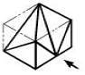
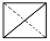
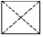
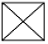
(정답률: 60%)
54. 다음 중 일반적인 전개도법의 종류가 아닌 것은?
- 평행선법
- 방사선법
- 삼각형법
- 반지름법
(정답률: 53%)
55. 도면 부품란에 재료의 기입이 SM 45 C 로 기입되어 있을 때, 재료 명은?
- 용접구조용 압연강재
- 탄소 주강품
- 기계구조용 탄소강재
- 회주철품
(정답률: 58%)
56. 보기 입체도의 제3각 정투상도로 가장 적합한 것은?
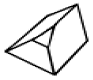
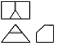
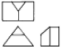
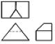
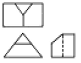
(정답률: 80%)
57. 보기 입체도를 3각법으로 정투상한 도면 중 잘못된 것은?
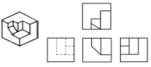
- 정면도
- 우측면도
- 평면도
- 좌측면도
(정답률: 59%)
58. 용접 보조기호 중 용접부의 다듬질 방법을 특별히 지정하지 않는 경우의 기호는?
- C
- F
- G
- M
(정답률: 38%)
59. 보기 그림과 같은 리벳이음 명칭으로 가장 적합한 것은?
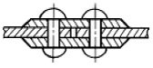
- 1열 2점 겹치기 이음
- 1열 맞대기 이음
- 2열 겹치기 이음
- 2열 맞대기 이음
(정답률: 22%)
60. 보기 도면과 같은 단면도 명칭으로 가장 적합한 것은?
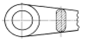
- 부분 단면도
- 직각 도시 단면도
- 회전 도시 단면도
- 가상 단면도
(정답률: 64%)